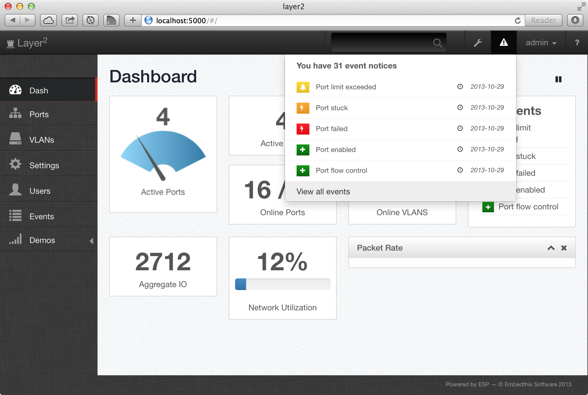

Quick Nav
See Also
Embedded Server Pages for Angular
Angular is a client-side web framework designed for single web page applications that is well-suited for creating dynamic management applications. ESP support Angular by providing an Angular component for the esp generator and a script library to support and extend Angular for ESP.
Why Angular?
Why use a client-side framework like Angular? Why not just generate HTML at the web server? The answer is a better user experience. By using a framework such as Angular, you can create a faster, more responsive, more dynamic user interface. This is because it creates dynamically creates the user views at the client. This reduces or eliminates the typical page reload wait times if all views are rendered at the server.
There are may client-side web frameworks to choose from, but Angular offers one of the more powerful framworks that requires very little coding to express and manage user interfaces.
This screen shot is of the Embedthis Kickstart interface that was created using Appweb and ESP Angular.
Understanding Angular
Angular is a powerful client-side framework and it will take some time to learn and understand it sufficiently to use with Appweb/ESP. It is important to familiar with the key Angular concepts and to create some stand-alone Angular applications before using with ESP. Please see and read the Angular resources listed below.
Distributed MVC
When using a client-side, single-page architecture (SPA) framework like Angular, the traditional Model-View-Controller paradigm becomes distributed or spread-out over both the server and the client. Both client and server run MVC stacks, but each side emphasises different parts of the MVC paradigm.
At the server, application data and server-side data models are stored. Server controllers receive client requests, validate request data and access data models as required. Responses are typically sent in JSON format.
On the client side, a simple data model receives and stores server data. Client side controllers manage the client interaction and response data for the presentation views. View templates are dynamically created and populated with server data before being and applied to the brower DOM for display.
Generating Applications
The easiest way to get started with ESP for Angular is to use the esp generator program, but first you need to download the esp-angular-mvc package from the Pak Catalog using Pak. The following sequence will generate an application with ESP for Angular support.
mkdir myapp cd myapp pak cache esp-angular-mvc esp install esp-angular-mvc
Once generated, you can generate controllers, scaffolds or database migrations. For example:
cd myapp esp generate scaffold blog title:string body:text
This will generate a MVC scaffold with basic Create/Read/Update/Delete (CRUD) operations, database table, controller and views for "blog" resource.
Application Structure
ESP for Angular uses a standard directory layout to structure your application. While this can be modified to suit custom needs, the standard structure scales well to suit most needs. The approach can be broadly called "organize by feature". Rather than group all views together and similarly with models, services and controllers, ESP organizes the application by feature so that the view, controller and data model for a given feature are together in one place. This approach scales better as the application grows.
Directory Layout
If you use the esp generator to create your application, the default ESP organization is generated for you. Directories are created for client-side code and assets as well as directories for server-side controllers and database assets.
The client directory is the set of public files that are served to the client. This directory represents the top of the application. Everything under the client directory is visiable to the client. So do not put private information such as passwords or keys anywhere under the client directory.
The key directories and files are listed below:
appweb.conf # Appweb configuration file
package.json # ESP and application configuration file
start.me # MakeMe build file
cache/ # Compiled code
client/ # Public files served to the client
app/ # Application features
main.js # Main application script
main.js # Main application script
name/ # Single (named) application feature
name.js # Feature database MVC model
nameControl.js # Feature MVC controller
name-edit.html # Edit view HTML partial page
name-list.html # List view HTML partial page
...
assets/ # Media assets. Images, audio, video
favicon.ico
css/ # Style sheets and Less sheets
all.less # Top level less sheet that includes all others
app.less # Application specific styles
theme.less # Application theme variables
index.esp # Application home page
lib/ # Third party components
controllers/ # Server-side "C" controllers
name.c # Server controller for feature "name"
db/ # Database files
migrations # Database migration "C" scripts
src/ # Other application "C" code
app.c # Application global code
To change default directories, use the EspDir configuration directive. For example:
<EspApp name="myapp" routes="esp-angular-mvc">
EspDir cache /var/spool/cache/myapp
</EspApp>
Building
An ESP for Angular application is represented by five groups of resources:
- HTML pages
- Scripts
- Style sheets
- C Code
- Media assets
In a typical application, these resources may number in the hundereds. If they were served individually, either the initial startup time would be slow, or the per-page transition would be slow. ESP for Angular optimizes this by compiling HTML pages into Javascript and then combining with all other all scripts into a single, minified, compressed script file. Similarly, CSS and Less sheets are aggregated, minified, and compressed into a single file. Further, the C code can be "combined" into one source file which is compiled into a single binary. The end result is a highly optimized application that starts quickly and transitions from view to view without delay.
Components
ESP for Angular depends on a suite of contributing components to achieve its magic. These components are:
- Server — Core ESP Angular server-side structure
- Angular — AngularJS libraries
- Angular-esp — ESP for Angular services, directives and scripts
- less — The Less dynamic stylesheet language
- more — Polyfill for newer HTML5 elements
- esp-angular-mvc — ESP for Angular definition and templates
Client / Server Request Protocol
Between the client and server, the typical exchange of HTML pages, style sheets, scripts and media takes place. However with ESP and Angular, this occurs mostly at the start of the application. Thereafter, requsts are received from the client and responses are sent in JSON format. While additional HTML, scripts, style sheets and medai may be provided to the client in HTML format, the vast bulk of the traffic is pure JSON. This makes the application more efficient and responsive as there are fewer requests to the server and the responses are typically much more compact.
Request Data
Requests supply parameters via a POST body encoded in JSON. If the request is from a HTML form, the form parameters are mapped to corresponding JSON property names. Otherwise, the client if free to format the JSON body as it wishes.
Response Data
ESP controllers are free to use any response format they wish. However, some convenience APIs follow a specific JSON encoding format that supplies data, schema and out-of-band feedback to the client. This format is called the ESP JSON response format. For example:
{
error: 1,
feedback: {
error: "Post not created",
},
fieldErrors: {
"field-1": "User name not unique"
},
data: {
id: "23",
"name": "John",
},
schema: {
"types": {
"name": {
type: "string",
},
},
columns: [ "name", ...]
},
}
The top-level properties are:
- error — Numeric error code. Set to 0 for success.
- feedback — Colllection of feedback messages. Typical keys are: "inform", "error" and "warning".
- fieldErrors — Collection of field validation errors. Each key is the name of a record field. The field value is the error message.
- data — Simple record object or array of records. All data are sent as strings.
- schema — Database schema for the record data. Includes properties "types" for field data types. The valid types are "int", "boolean", "string", "number". The "columns" field holds the names of the record columns (excluding "id").
Configuring ESP
In addition to the standard package.json configuration fields (see Esp Configuration File for details), ESP for Angular defines a few properties to assist with configuration.
{
settingss: {
formats: {
date: 'yyyy-MM-dd',
float: 2, # Show two decimal places
},
json: true,
}
}
The formats collection defines default data presentation formats to be used in the absense of explicit view instructions. The json property instructs ESP to send all error messages via JSON in the "feedback" channel.
Development and Product Modes
The settings.debug property selects the debug or release collection of properties to be copied to settings. The debug/release collection has by default the following properties:
debug: {
combined: false, # Run in combined vs discrete mode
showErrors: true, # Show debug errors in the client browser
keepSource: true, # Keep intermediate source in "cache"
update: true, # Dynamically reload modified code
login: {
name: "", # Auto-login by this user name
abilities: { # User abilities
edit: true,
view: true,
},
},
},
You can also add your own properties to debug and release.
The login property permits you to specify a user-name that will be used to automatically login the client with the specified abilities. This is useful for debug to bypass a mandatory login dialog.
ESP Angular Services, Directives and Filters
ESP Angular provides a suite of Angular services, directives and filters to tightly integrate ESP and Angular and facilitate smooth, easy, communications between the two. See the ESP Angular API for API specifics.
Esp Service
The Esp object provides utility function and state services that may be accessed directly from the Esp object. The Esp service also performs background activities to smooth the execution of Esp applications. Specifically:
- The Esp service will track the browser referrer and store it in Esp.referrer.
- The Esp service will assist in managing the user feedback service from the server-side controller. Whenever a browser click event is received the transient feedback message area will be cleared.
- The Esp service will manage client side sessions. While the ultimate arbiter of user sessions is done on the server side, the Esp service will mirror a client side understanding of the server side service. The Esp service will warn the user when a session is about to expire and will provide details of the authenticated user via the Esp.user.name and the Esp.user.abilities properties.
- The Esp service wraps the Angular http service and intercepts responses to provide uniform error handling. Responses with a 401 HTTP_UNAUTHORIZED status code are handled with the browser redirected to the login page defined by the "settings.loginRequired" value.
- The Esp service provides a checkAuth routine that can be called when resolving routes. This routine tests if the authenticated user has the requisite abilities to be granted access.
The ESP service may be injected by Angular client code to provide access to ESP in the client. The ESP service is also aliased in the Angular $rootScope as "Esp".
EspResource Service
The EspResource supports RESTful HTTP requests to ESP applications. The EspResource factory is used to create resource objects that interact with the server via RESTful HTTP requests. EspResource is typically used to create a resource object for each data model. Consider the example below that creates a resource group for users. This creates routes for the standard restful routes of: create, edit, init, list, remove and update, as well as creating custom routes for forgot, login and logout. Each of these routes is represented by a function that can be called to issue the corresponding HTTP RESTful request.
SessionStore
The SessionStore service object that provides access to client session storage using the Javascript window.sessionStorage API.
esp-click
The esp-click directive can be used on elements instead of "href". This will conditionally redirect the user to a link if the user has the required abilities. Abilities are defined in the configured authentication store.
esp-field-errors
The esp-field-errors directive displays form validation errors returned from the server.
esp-input
This directive generates appropriate HTML input, textarea, checkbox, radio or select elements based on the field data type.
esp-input-group
This directive generates a set of appropriate HTML input elemetns based on the types of the input fields in a record.
esp-titlecase
The esp-titlecase filter capitalizes the first letter of each word.
format
The format filter transforms data to be displayed to the required format. This can be used to tailor the way dates and numbers are displayed.
User Authentication and Permissions
- User database table vs other stores - User roles - Restricting access on the client side -Hosting
Applications created via the esp generator will have a hosted.conf file. This may be modified to suit and then be included from an existing appweb.conf to host.
include /path/to/hosted.conf
ESP Angular API
For full details of the ESP Angular APIs, see ESP Angular API.
Samples
The appweb source code includes a large set of samples that demonstrate many uses of ESP. See the samples at Appweb Samples. For an Angular specific sample, see: ESP Angular MVC.
Angular Resources
Here are some useful resource to learn about Angular.
- angular.org — The official Angular web site
- AngularJS End to End — AngularJS Overview Presentation
- www.youtube.com/user/angularjs — The official Angular youtube channel
- blog.angularjs.org — The official Angular blog
- plus.google.com/+AngularJS — Angular Google+ Page
- egghead.io — AngularJS Videos and Tutorials
- docs.angularjs.org — AngularJS Documentation
- en.wikipedia.org/wiki/AngularJS — Wikipedia Angular article